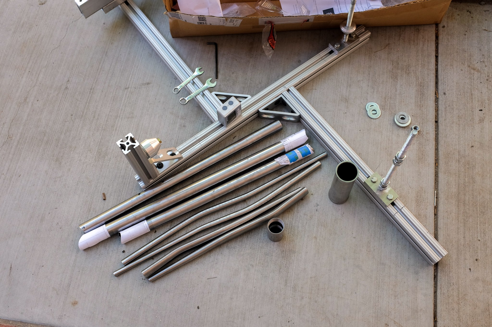
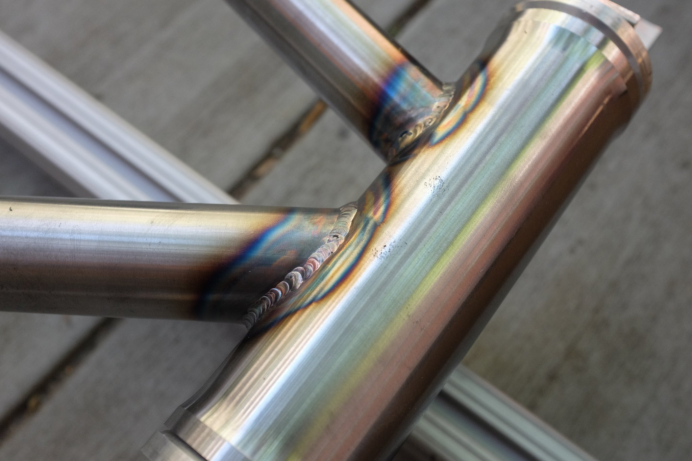
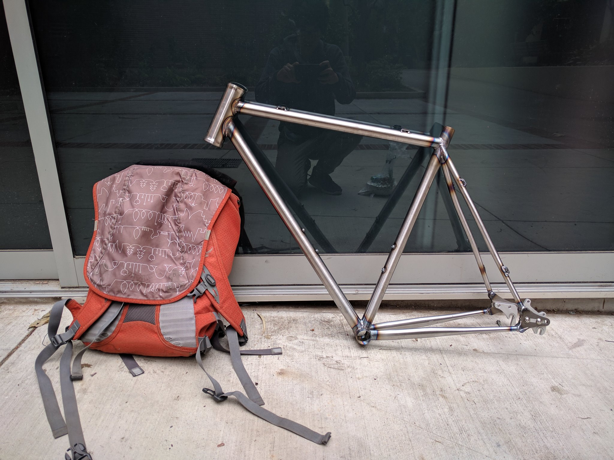
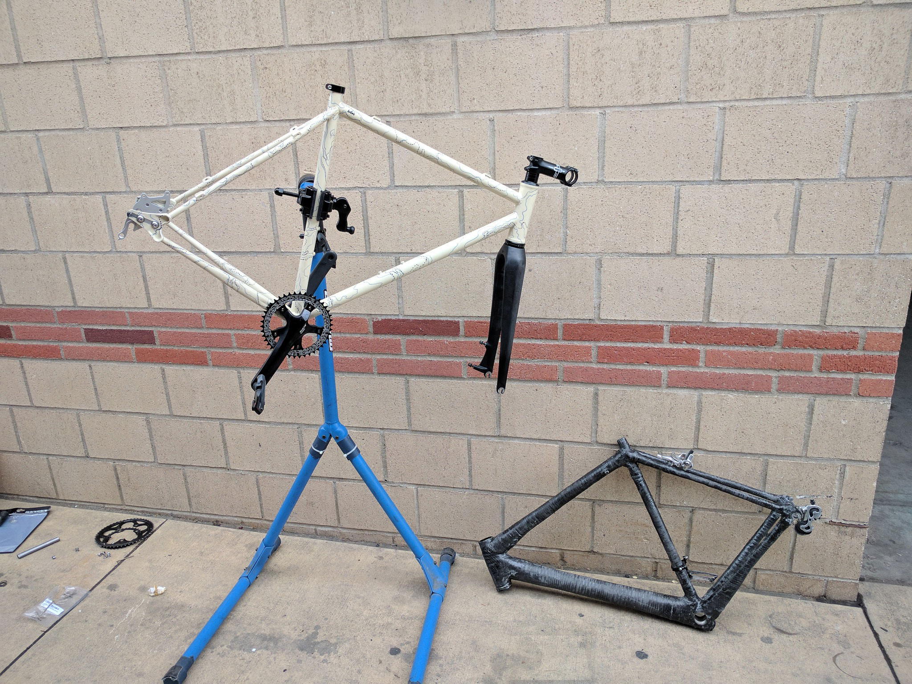

Steel Cyclocross Bike

I wanted a single bike that could ride fast enough in traffic but could also handle a little off-roading, so I designed and built a bike frame to use as commuter around town and an adventure bike. I started by determining the desired geometry for a quick handling bike with reasonable stability and comfort. I then searched online for appropriate tubes and parts. I decided to use round double butted chromoly tubes for the main traingle and seatstays and oval tapered tubes for the chainstays. A straight 44mm headtube would allow the most versatility in using either a straight or tapered fork. I then used SolidWorks to model the frame and check for crank and tire clearance. After that, I printed out guides for mitering each tube by hand.
I had previously build a carbon fiber frame using a very inaccurate jig, so I decided to build a sturdier custom jig that could be adjusted for different geometries in case I decided to create another frame in the future. I machined cones to align the seat tube, headtube, and bottom bracket on the jig. A threaded rod was machined to hold the 7mm thick dropouts spaced 130mm apart.


After jigging up the tubes and checking alignment with a digital angle gauge, the tubes were welded together by Travis Widick at the UCLA Welding Shop.


After welding, I coated the inside with framesaver to prevent rust and preped the outside for paint. I used enamel spray paints for the base and sharpies for the detail. The paintjob started organge peeling in certain spots where I oversprayed and a few other spots were chipped during transport. I may consider re-painting the frame myself with more care, or taking it to a shop to be painted professionally if the current paint job gets damaged any further.
